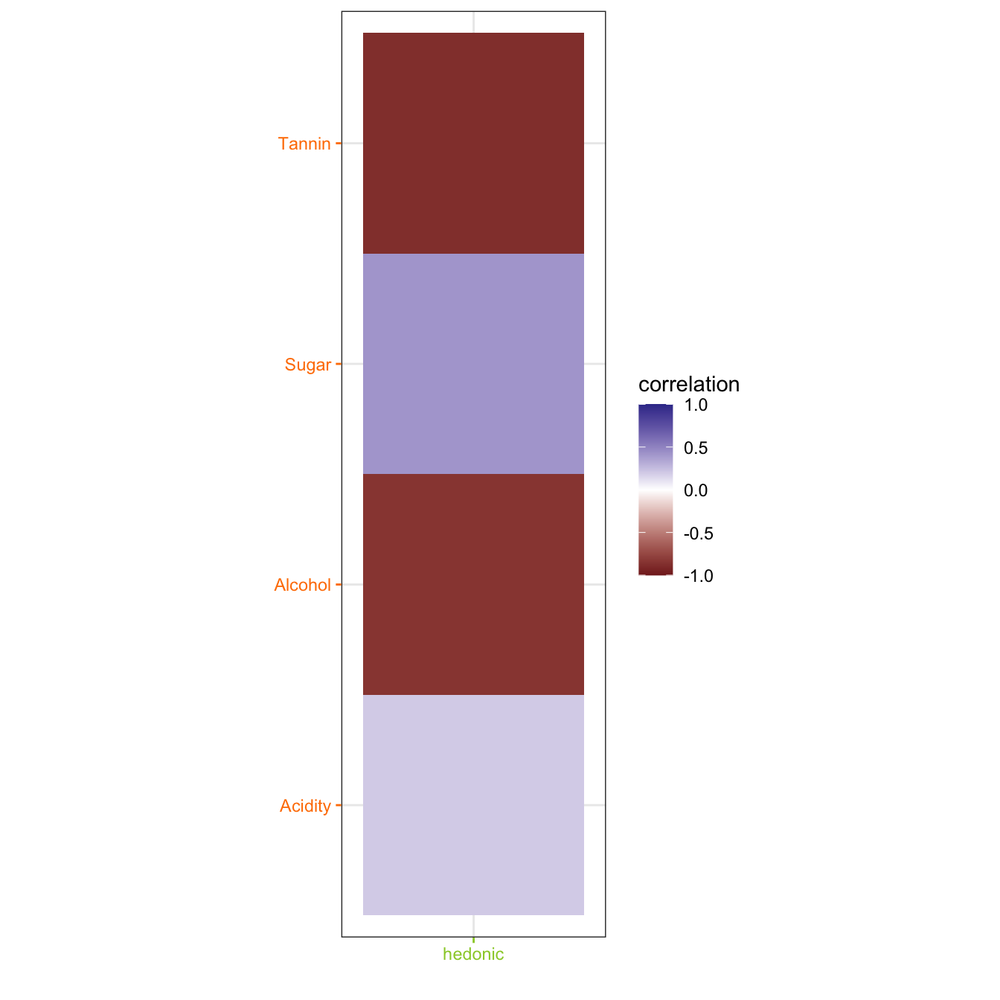
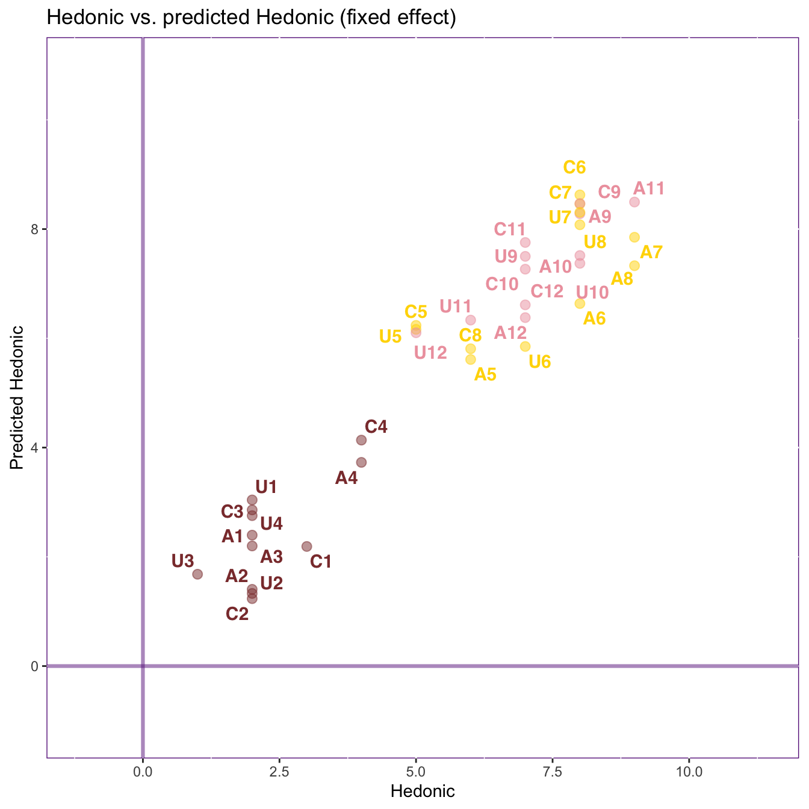
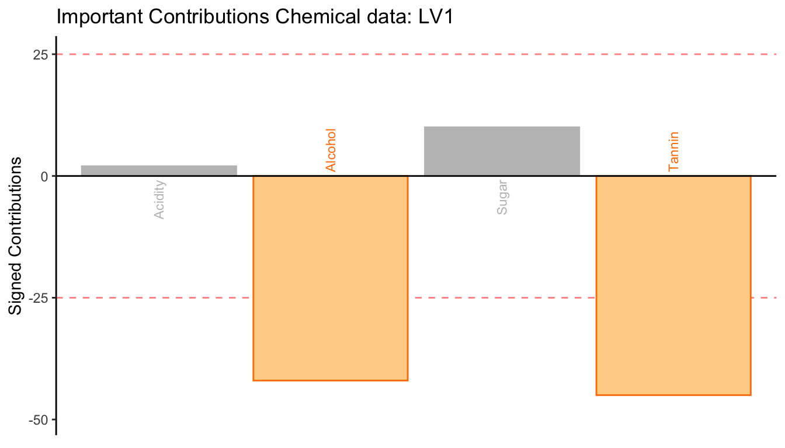
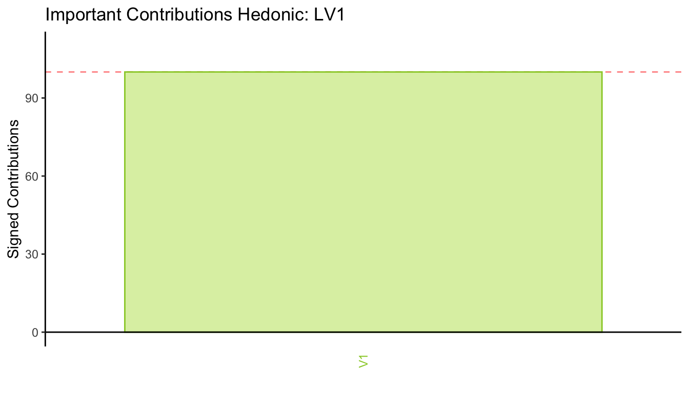
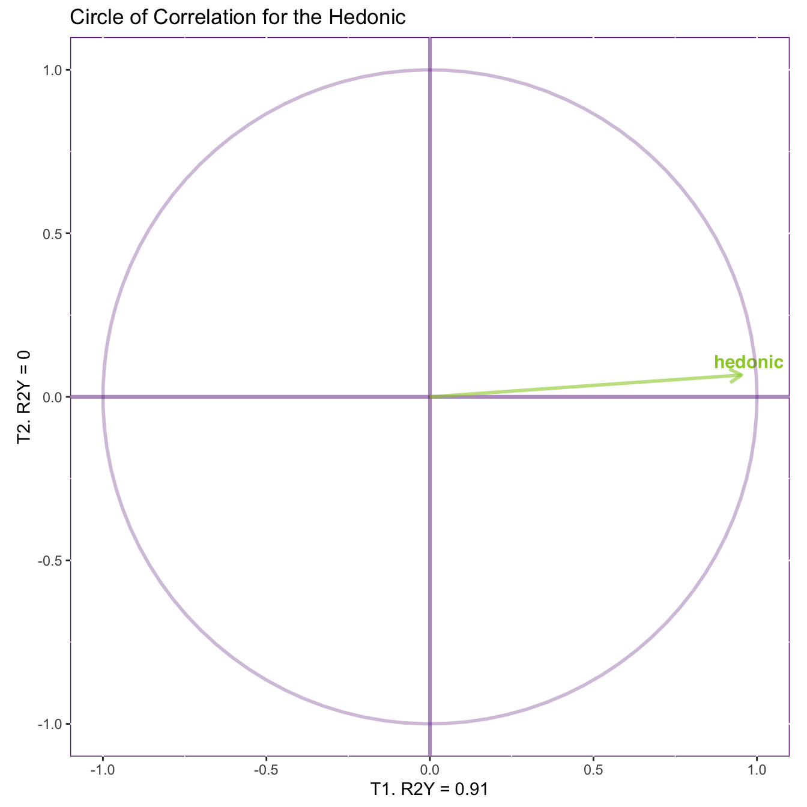
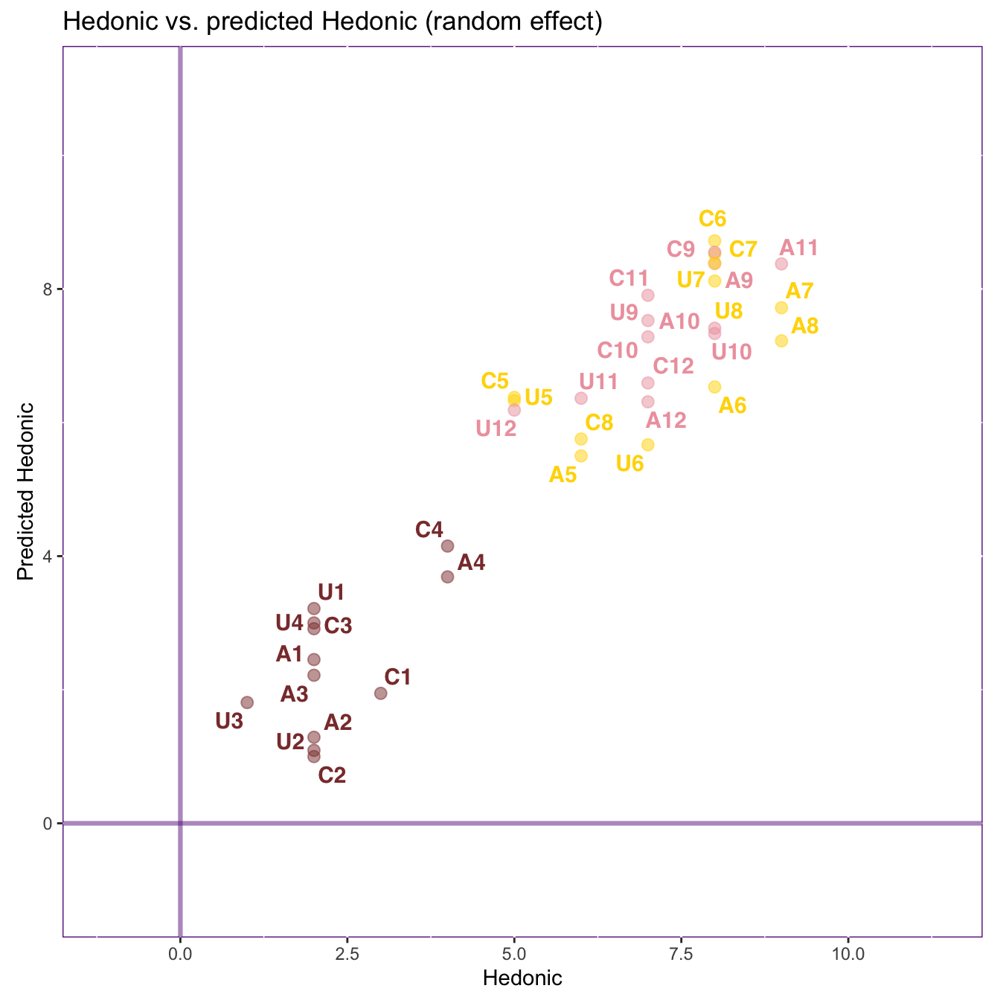

R code
library(R4SPISE2022)library(R4SPISE2022)With the following command
data("winesOf3Colors", package = "data4PCCAR")More information on the dataset is available on the corresponding vignette: vignette("A3_DataWines").
descr <- winesOf3Colors$winesDescriptors %>%
select(origin, color, varietal)
suppl <- winesOf3Colors$winesDescriptors %>%
select(Price)
chemi <- winesOf3Colors$winesDescriptors %>%
select(Acidity, Alcohol, Sugar, Tannin)
senso <- winesOf3Colors$winesDescriptors %>%
select(fruity, floral, vegetal,
spicy, woody, sweet, astringent)
chemisenso <- winesOf3Colors$winesDescriptors %>%
select(Acidity, Alcohol, Sugar, Tannin, fruity, floral, vegetal,
spicy, woody, sweet, astringent)
hedo <- winesOf3Colors$winesDescriptors %>%
select(hedonic)chemi) that includes acidity, alcohol, sugar, and tannin.hedo).origin, color and varietal.Price.The data4PCCAR::PLSR_SVD function takes two entries of data tables. The first entry will be the predictor table (X) and the second entry will be the predicted table (Y) as in a regression equation: \(\mathbf{Y = \beta X + E}\). In RA, the dimensions maximize \(\beta\) of each pair of latent variables.
res.plsr <- data4PCCAR::PLSR_SVD(chemi, hedo, 3, inference = TRUE, displayJack = TRUE)The function will center (to have means equal 0) and scale (to have the standard deviation equal 1) all variables in both data tables.
## You might need to load these packages if the error is saying that it couldn't find some functions
# library(PTCA4CATA)
# library(data4PCCAR)
res.plsr.plot <- PLSRplot(
res = res.plsr, # Output of tepPLS
displayJack = TRUE,
color.obs = wineColors, # <optional> colors of wines
color.tab = varColors, # <optional> colors of the two tables
tab1.name = "Chemical data", # <optional> Name of Table 1 (for printing)
tab2.name = "Hedonic", # <optional> Name of Table 2 (for printing)
DESIGN = descr$color, # design for the wines
tab1 = chemi, # First data table
tab2 = hedo) # Second data tableIn this PLSRplot function, if DESIGN is specified. The latent variables will be colored according to the groups of the observations with the group means and their 95% bootstrap confidence intervals.
We can check the data by plotting first the correlation matrix between the two data sets. This correlation matrix is where the dimensions are extracted.
res.plsr.plot$results.graphs$heatmap.rxy
The scree plot shows the eigenvalues of each dimension. These eigenvalues give the squared coefficient of regression (\(\beta^2\) = NA) of each pair of latent variables. In other words, the singular values, which are the square root of the eigenvalues, give the coefficient of regression (\(\beta\) = NA) of these pairs of latent variables. The sum of the eigenvalues is equal to the sum of the squared correlation between all variables in both tables.
res.plsr.plot$results.graphs$scree.eig.R2X
res.plsr.plot$results.graphs$scree.eig.R2Y
res.plsr.plot$results.graphs$scree.sv.R2X
#> NULL
res.plsr.plot$results.graphs$scree.sv.R2Y
#> NULL
res.plsr.plot$results.graphs$Y.RESS.plot
res.plsr.plot$results.graphs$YYhat.plot
Here, we plot the first latent variable of both tables against each other with the observations colored according to their groups. This plot shows how the observations are distributed on the dimension and how the chosen pair of latent variables are related to each other. When plotting the first pair of latent variables, we expect the observations to distribute along the bottom-left-to-top-right diagonal line (which illustrates a perfect association), because RA maximizes the coefficient of regression of the latent variables.
To examine the stability of these groups, we plot the group means with their 95% bootstrap confidence intervals (or ellipsoids). If the ellipses do not overlap, the groups are reliably different from each other. However, it’s worth noted that the distribution of the observations does not imply how the groups (represented by the group means) are distributed or whether the groups are reliably different from each other.
Note: The grouping information are independent from RA and are only use to help provide a summary description of the observations.
res.plsr.plot$results.graphs$lv.plot
The results from Dimension 1 show that the chemical data can predict the performance of the sensory data, and such prediction separates the red wines from the rosé and the white wines, but not the rosé and the white.
These bar plots illustrate the signed contribution of variables from the two data tables. From these figures, we use the direction and the magnitude of these signed contributions to interpret the dimension.
The direction of the signed contribution is the direction of the loadings, and it shows how the variables contribute to the dimension. The variables that contribute in a similar way have the same sign, and those that contribute in an opposite way will have different signs.
The magnitude of the contributions are computed as squared loadings, and they quantify the amount of variance contributed by each variable. Therefore, contribution is similar to the idea of an effect size. To identify the important variables, we find the variables that contribute more than average (i.e., with a big enough effect size). When the variables are centered and scaled to have their sums of squares equals 1, each variable contributes one unit of variance; therefore, the average contribution is 1/(# of variables of the table).
res.plsr.plot$results.graphs$ctrW1.plot
res.plsr.plot$results.graphs$ctrW2.plot
res.plsr.plot$results.graphs$LoadingsMap.X
res.plsr.plot$results.graphs$ctrC1.plot
res.plsr.plot$results.graphs$ctrC2.plot
res.plsr.plot$results.graphs$LoadingsMap.Y
From these two bar plots, the first dimension is characterized by (1) the positive association between Alcohol and Tannin from the Chemical data and Woody and Astringent from the Sensory data, and (2) the negative association between these variables and Hedonic from the Sensory data.
Together with the latent variable plot, we found that, as compared to the rosé and the white wines in the sample, the red wines are less Hedonic and stronger in Alcohol, Tannin, Woody, and Astringent.
The circle of correlations illustrate how the variables are correlated with each other and with the dimensions. From this figure, the length of an arrow indicates how much this variable is explained by the two given dimensions. The cosine between any two arrows gives their correlation. The cosine between a variable and an axis gives the correlation between that variable and the corresponding dimension.
In this figure, an angle closer to 0° indicates a correlation close to 1; an angle closer to 180° indicates a correlation close to -1; and an 90° angle indicates 0 correlation. However, it’s worth noted that this implication of correlation might only be true within the given dimensions. When a variable is far away from the circle, it is not fully explained by the dimensions, and other dimensions might be characterized by other pattern of relationship between this and other variables.
res.plsr.plot$results.graphs$heatmap.rty
res.plsr.plot$results.graphs$cirCorY.plot
These circles of correlations show that Alcohol, Tannin, Woody, Astringent, and Hedonic are strongly correlated to Dimension 1 with Henodic inversely correlated with all other variables. These variables are mostly explained by the first dimension and have close-to-zero correlation with the second dimension (which is not included and discussed in the previous sections).
res.plsr.plot$results.graphs$YYjack.plot
res.plsr.plot$results.graphs$Y.PRESS.plot